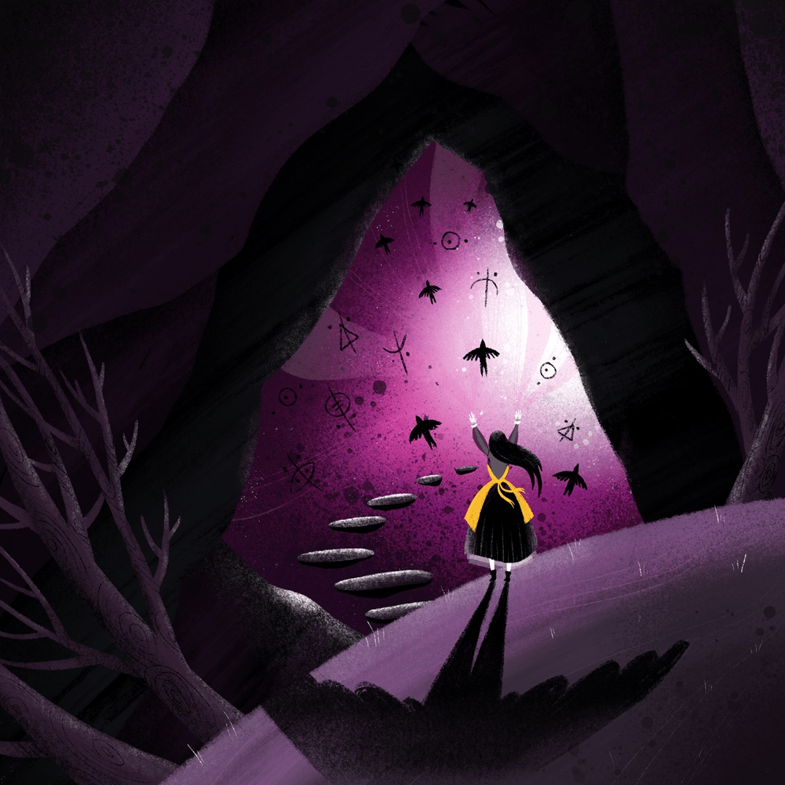
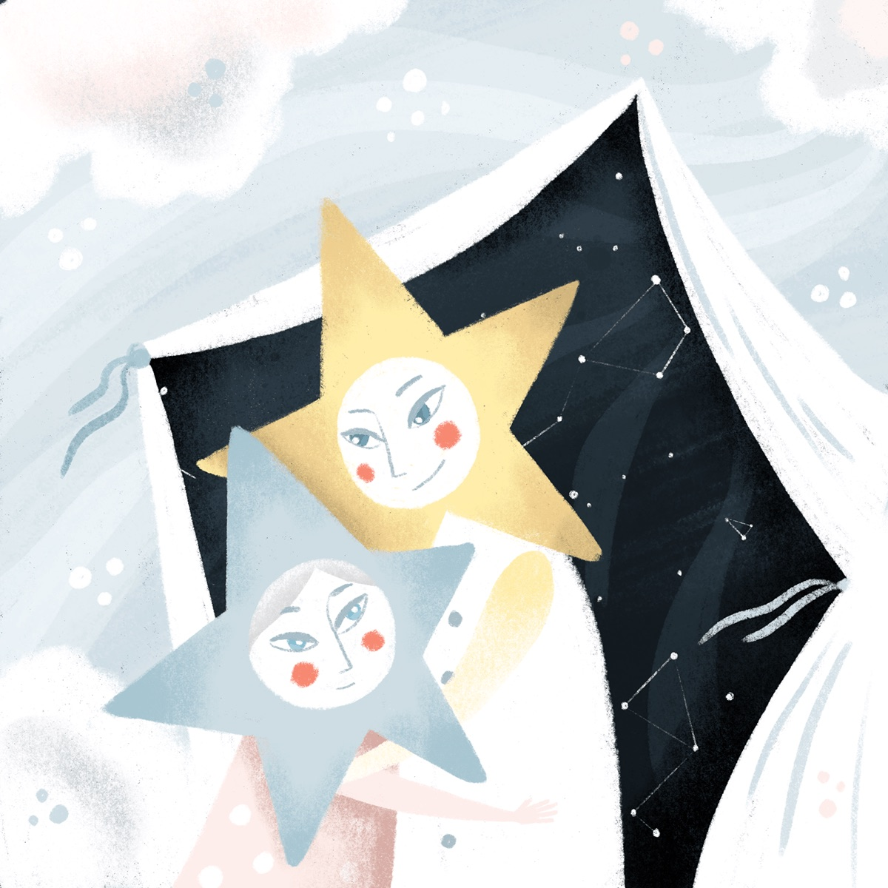
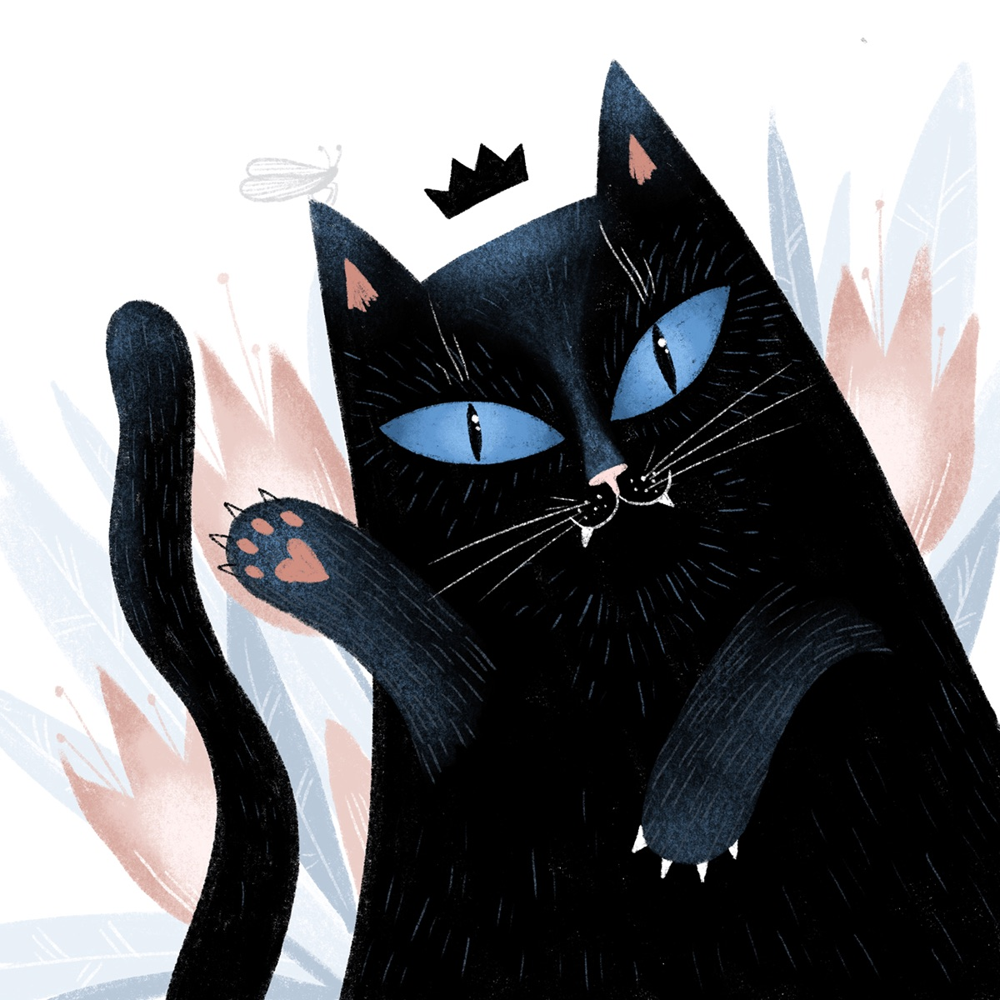
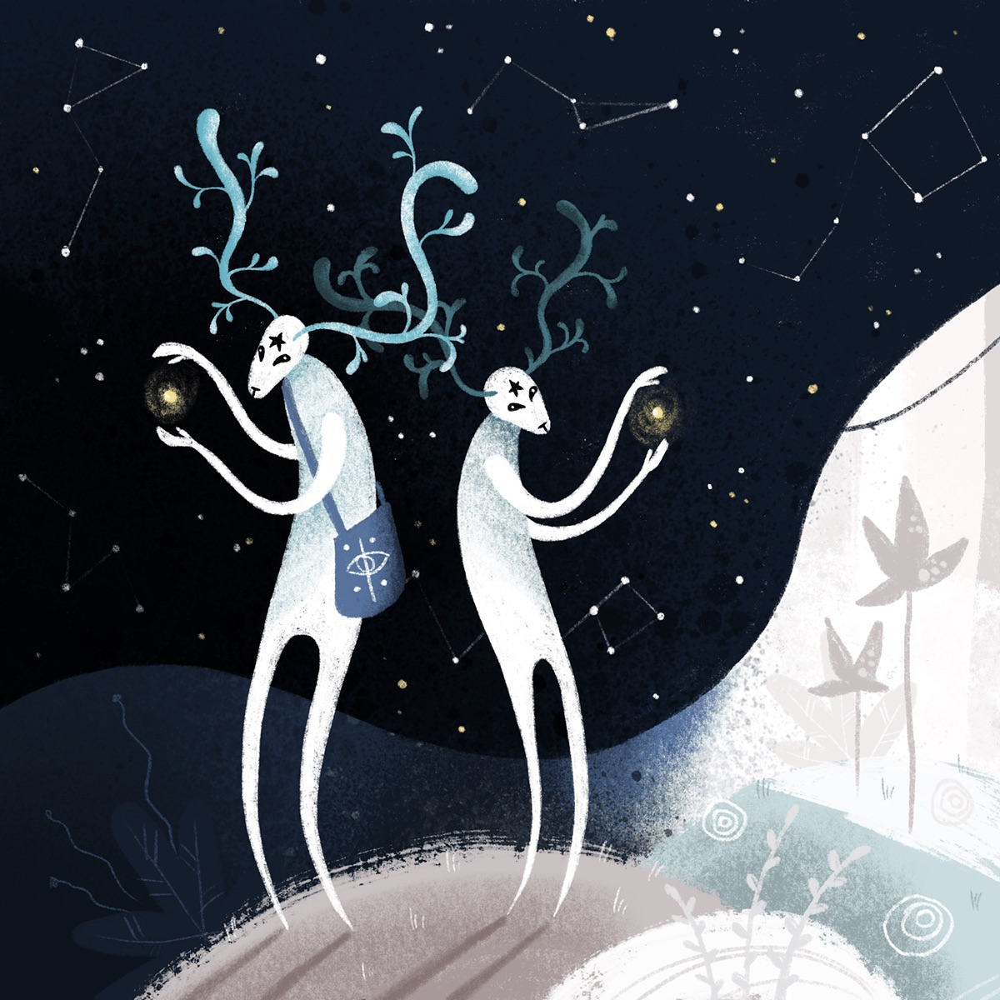
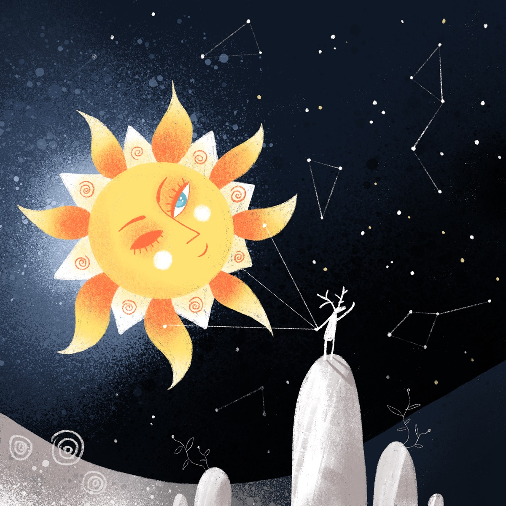
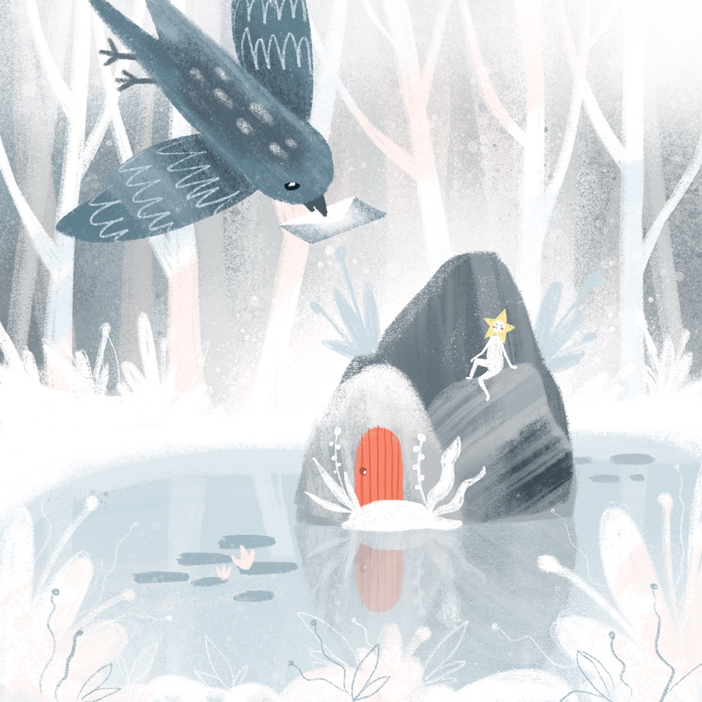
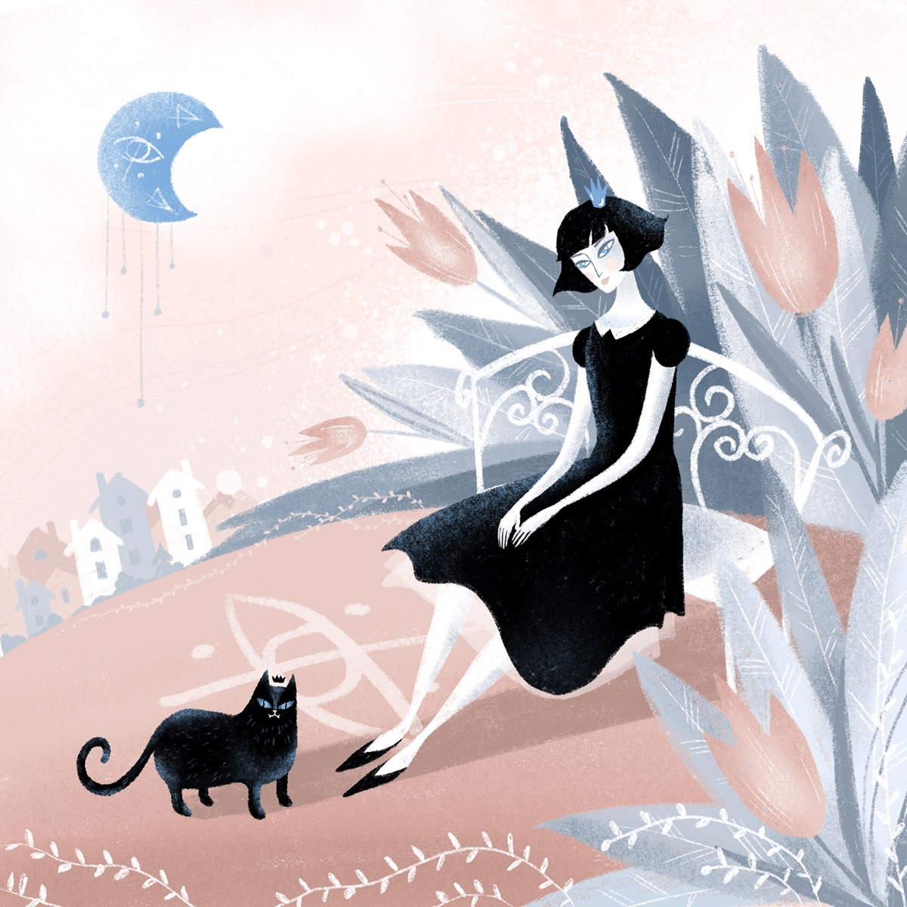

i.
Somewhere beyond the violet hills there is a cave where the birds draw strange signs in the air.
An illustrated collection
of four little stories
Vol. I
Scroll story



Read slowly. Every page is a small window into a world where birds turn into girls, stars move to the forest and kittens wear crowns.


01 / 03
Somewhere beyond the violet hills there is a cave where the birds draw strange signs in the air.
On a full moon you may meet a black bird carrying a branch of pink berries in its beak.
Only once a year can it take on its true appearance with these berries. There are so many enchanted birds, but not every one is able to become human.

01Every night the Moon breathes out the sky like a long scarf full of stars.

02Two antlered keepers walk behind it and carry the lost lights home.

03At dawn the smallest keeper climbs the highest rock to wake up the Sun.

04And so the whole sky turns, from the Sun to the Moon, in one long breath.
Everyone has a choice — and so many stars choose life on earth.

They fall softly, holding on to the wings of the wild birds.

They build small houses in dense forests and tame little wild birds, so that at any moment they can return to where their heart is.
At first glance it's just a regular little black kitten. But if you look closely, you can see a tiny black crown on its head.

…and a little bit of cat magic.

The kitten has no master, but it has a very close friend — and they share every secret of the garden.